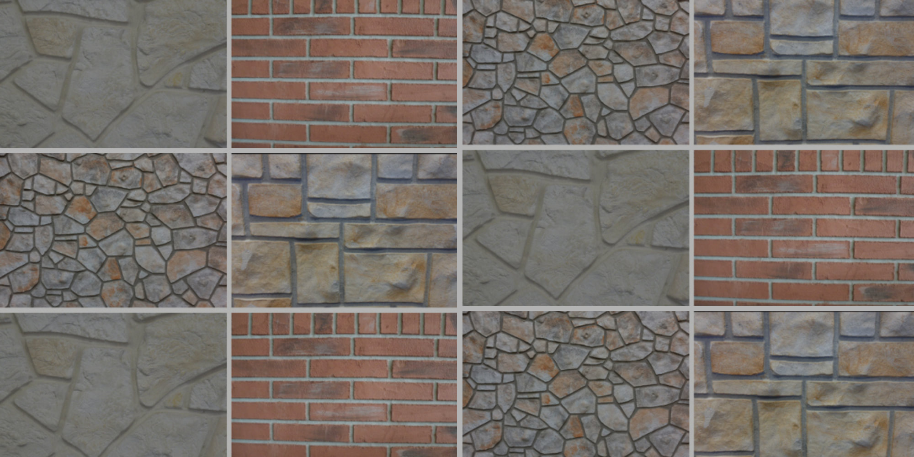

What we do
Full-service masonry & restoration.
From period-correct restoration on historic landmarks to the brickwork on your porch, we do the whole of the craft.

01
Historic Masonry Restoration
Historic masonry demands more than a repair — it demands a match. We mix custom mortar to suit the original composition, colour and joint profile, so restored areas sit correctly alongside century-old work. Our crews have carried out this work on landmark buildings across St. Louis, including projects for the National Park Service.

02
Tuckpointing
When mortar joints erode, water gets into the wall and the damage accelerates. We cut out failed mortar to the proper depth, repack with a mix matched to your existing masonry, and tool the joints to match the original profile. On older homes we will often recommend a lime-based mix over portland cement so the wall can breathe.

03
Porch & Patio Repairs
Porches and patios take the worst of the weather and the most foot traffic. We rebuild settling steps, replace spalled brick and stone, reset loose treads and correct the drainage problems that caused the failure in the first place.

04
Chimney Repairs
A deteriorating chimney is both a structural and a safety problem. We rebuild from the roofline up where needed, repair or recast crowns, repoint the stack and address the flashing so water stops finding its way in.

05
Stone Work
From fieldstone foundations to cut stone facades and retaining walls, stone work rewards experience. We match coursing and joint work to the existing structure, and repair rather than replace wherever the original material can be saved.

06
Bricklaying
New walls, rebuilds, openings and structural brickwork for residential, commercial and institutional buildings. Brick is matched for size, colour and texture so additions and repairs read as part of the original building.
Also offered
Maintenance & specialty work.
Power Washing
Careful, pressure-appropriate cleaning that lifts dirt without damaging soft masonry.
Water Repellent
Breathable sealing that keeps water out while letting trapped moisture escape.
Cleaning
Masonry cleaning to remove staining, efflorescence and decades of atmospheric grime.
Swimming Pool Repair
Masonry repair to pool surrounds, coping and structural stonework.
Driveway Sealing & Caulking
Joint sealing and caulking that stops water working its way beneath the slab.
Custom Mortar Mixtures
Mortar mixed to match the colour, texture and strength of your existing masonry.
Not sure what your masonry needs?
Tell us what you are seeing and we will take a look.